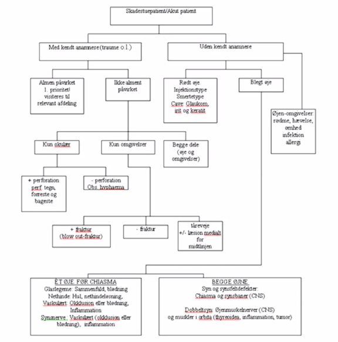

Akut oftalmologi
Torben siger velkommen
- Vigtigt også at være systematisk ved øjenproblemer
- Der er nogle ting hvor I skal være obs i oftalmologien
- Hul på øjet
- Det skal have hård klap og ring til en øjenlægerne på mistanken
- Akut glaukom
- Alm påvirket
- hovedpine
- nogle ange bliver de indlagt gastro eller neurologisk
- Arteritis temporalis
- Voldsomt syntruet
- Et øje -> oftalmologi, to -> Neurologerne!
- Ellers er oftamologien ikke så voldsom...
- Hul på øjet
første case
- alm situationer efter 1. marts
- 50 årig man fortæller at han har fået en skudt en fjerbold i ve. øje
- Normal danskerlæsion da man dansker spille badminton
- Hvilke spørgsmål vil I stille pt?
- Synstab?
- Smerter?
- Konuunktivale
- Ciliære
- ...
- Dobbeltsyn
- Mistanke om blowout-fraktur
- Kontaktlinser
- Fremmedlegeme i øje.
- Kan have flyttet sig til fornicis
- Noget med øjets følsomhed overfor traumer?
- To veje:
- Langsynet - smalt øje, blod i forreste kammer - sekundær lukket glaukom
- Nærsynet - øget risiko for traumatisk nethindeløsning
- Hvilen del af fjerbold har ramt øjet? (traumemekanisme)
- ridse i hornhinde - abrasio (det gør meget ondt)
- Tidl. fejlet noget med øjet
- Godt spørgsmål
- Tidl. OP gør øjet mere følsomt for traumer
Anamnese - slide
- Hvilken hastighed blev du ramt med?
- Hvordan er synet?
- Hvor langt fra? Er der synsforstyrrelser (lynglimt, fluer/myg
- lynglimt - traumatisk glaslegemesammenfald
- fluer - blødning inde i glaslegemet "glaslegemeblødning"
- større kontusionstraume
- Hvilken del af fjerbold ramte?
- Er der smerter?
- Beskriv nærmere?
- Hvor ramte den?
- Har du tidligere fejlet noget med øjet?
- Traume/kirurgi/nærsynethed/nethindeløsning
Objektivt
- Udefra og ind
- Øjenomgivelser
- Særlige opmærksomhed
- Øjekanter
- Tårekanal
- Trichiasis - skævsammenvoksning
- Fejlvendt cilie der kører op og ned af cornea
- Hæmatomer
- Konturspring
- Øjets stilling el. lejring.
- enoftalmus -> blow out
- Øjekanter
- Særlige opmærksomhed
- Bulbus
- Hul på øjet
- Penetrerende traume
- Hård klap og RING (til ofta)
- Ikke røre ved det
- Tegn
- Irregulær pupil
- Affladning - lyse fra siden?
- Hæmoragisk chemosis?
- Slimhinde vælver fremad
Slides
Hvilke objektive undersøgelser vil du foretage? * Bulbus? Hvad vil du være særligt opmærksom på? * Visus? * Synsfelt for hånd? (udfald) * Konjunktiva? (konjunktival hæm) * Cornea? (abrasio) * Camera Anterior? (hyphema, afsmalet) * Iris? (irisdialyse) * Pupil? (m sphincter pupillae, irregulær) * Linse? (lensedonesis) * Glaslegeme? (sammenfald, blødning) * Nethinde? (rift, amotio, blødning, berlings ødem) * Årehinde (ruptur)
Retinal rift
- lejring + laser *
hyphæma
Kontusions traume - ikke typisk hul men tjek om der er hul/anamnese med risiko for det Hvis det er lille, så kan folk gå til egen øjenlæge Hvis større, så RING
Blowout
- m. rectus inferior bliver indklemt ved blowout
Ekstrafifs
Hundebid i ansigt -> obs tåreveje
Flowchart

Syre-base / kemiske skade
- Bleg øje ved baseætsning er alvorligt.
- skylning
- stink plejer ikke at være noget problem
- baseætsninger skal man da være opmærksom på *
Spørgsmål
- Steroid behandling er stadig reserveret til øjenlæger?
- Ja, det er rigtigt
Intet traume
- Rødt øje
- Smerte eller ej?
- Meget ondt: ???
- Ikke ondt: overfladisk, konjunktivitis
- Smerte eller ej?
- Blegt øje
- noget andet.. jeg har nogle andre noter lavet til slides.
rødmer
- Ciliærtinjiceret
- Iriit = Iridocyklis = Anterior uveitis = Regnbuehindebetændelse
- Synekkier
- Henvis til øjen
- Keratit
- Alvorlig - I skal være obs
- Ses 14 dage om året om sommeren - Roskilde Festival
- Sover med kontaktlinser
- Dårlig hånhygiejne
- Ikke traume - mange smerter
- Uklar kornea
- Normalt skal man ikke kunne se cornea
- Infiltrat i cornea
- Keratit
- Syntruende tilstand.
- Skal ikke bare have kloramfenikol
- SKAL HENVISES!!
- PERFORRATIONSRISIKO
- Hypohion
- Akut glaukom
- ciliært injiceret
- akut vinkelblok
- Hvem er i risiko
- Ældre pt'er
- Hypermetrope - langsynet - smal øje
- Kommer obs SAH (hovedpine), gastroentereologisk (pga opkastninger)
- Obj: Man kan mærke med to fingre på bulbus - øget tryk
- DEt kan man virkelig mærke. Man skal dup-dup "mellem" to fingre.
- IKKE TRYKKE MED FLADHÅND - det er retrobulbær resistance
De tre henvises
- Rødt øje der smerter
- Iriit
- Kornea upåvirket
- Beh: dilatation af pupilen
- Keratit
- Cornea påvirket
- Akut glaukom
- Uklar kornea + stor pupil
- Iriit
Banale problem man skal kunne håndtere
Rødt øje
- Et er farligt, to er mindre farligt
- Rødt øje uden traume og smerter
- Måske lidt kløe og irritation
- Allergi
- Histamin
- Konjunktivitet, viral
- Damper selv af
- konjunktivit, bakterielt
- Ses ofte an, kan ikke skælnes fra viralt
- noget med kataralt barn (som vist var viral)
Synsnedsættelse - og bleg øje?
- Hvor i synsbane?
- Cornea, linse, makula, synsverne.
- Hvordan undersøger man? * Kornea - pensillyte * Linse - oftalmosko - rød refelsk * Glasmlege - rød refleks * Makula - oftalmolskopi * Synsnerve - direkte oftalmoskopi
Glaslegeme
- Fluer og myg.
- Corpus hæmoragi
- Bleg øje og synsforstyrrelser.
- Bare henvis
Toxoplasmose vitritter.
Makulær blødning ved våd AMD
- minus traume, bleg øje, svært nedsat syn
- Alt er normalt fraset makulablødning
- typisk våd AMD. Synstruende, henvises til behandling, ikke vagtarbejde, men indenfor 14 dage.
- Ret alm. 20-30% over 70 år har AMD (ikke våd dog)
Arteritis temporalis
- Iskæmisk papilødem
- Voldsomt nedsat syn.
- VIGTIGT:
-
- vil have haft advarsel - amurosis fugax (kortvarigt sortnend)
-
- Pludselig synsnedsættelse. Kommer pludseligt.
-
- Almene symptomer:
- tyggeclaudicadio
- hovedpine
- nakkeskulder smerter
- almen sygdomsfølelses
- været lidt trætte og dårlige i noget tid
- Præsenterer sig som
- nedsat visus
- påvirket pupil (da afferent pupildefekt) - synsnervesygdom
-
- Ved mistanke behandler man bare:
- 1 mg / kg kropsvægt prednisolon
- Vigtigt for at bevare syn
Central arterie okklusion
- bleg øje, pludselig synsnedsættelse
- apopelsi i kranienerve
- apopleksi - emboliudredes.
Central veneokklusion
- blødning i alle fire kvadranter
- skal bare henvis til praksiserende øjenlæge
- der er ikke noget systemisk man skal være obs på
Grenveneokklusion
- Pludselig er der del af synsfeltdefekt
- Her skal man finde ud af om det er på et øje eller begge - neurologi eller ej
- Diff - nethindeløsning - neurologisk - grenarterieokklusion
Grenarterieokklusion
- Markante symptomer
- Har et område de simpelthen ikke kan se. DEt reagrere pt på.
Rheumatogen amotio
- Nethindeløsning - det er ikke almindelig sygdom?
- Obs ved grå stær op.
Overordnet set
- systematisk udefra
- Tåreveje
- perforation - hold jer fra det *
Spørgsmål
- Konjunktivalt rødt øje der kan være farligt = Adenoviralkonjunktivitet som kan være ret generende - det ser man ikke. Farligt bob bob, synstruende er det ikke. Det andet er tørre øje der kan give abrasio og abrasio kan være et problem, så obs obs på det.
- Akut synsnedsættelse - hvad kan vi gøre i skadestue hvis de alligevel skal henvises
- Man skal finde ud af hvor akut det er
- Akut: Art. temp + central arterieokklusion
- Du har da ret.
- VIGTGT: Mna har oplevelse af at syn er blevet dårligt, men ofte er det løbende sket
- Det er en visitationsopgave. Reel synsnedsættelse?
- Akut eller i primærsektor
Er det skidt at putte flourosin i penetreret øje
Nej, det gør øjenlægerne tit for at se om flourocin kommer ind i øjet
Hvor meget vil du forvente at lægerne har oftalmoskoperet
Det forventer han ikke. Forventer man har fået et indtryk af hvad synet er. Direkte oftalmoskopi skal trænes. Der går ikke lang tid før der er devices hvor man bare lige tager et billede.
Post-septal cellulitis
Typisk infektion hos barn der har haft sinuitits VIGTIGT: Øjenbevægelserne. Hvis frie da ikke cellulitis. Hvis påvirket, da obs obs obs.
Hvad skal henvises kl. 3 om natten
- Hul på øjet
- Akut glaukom
- Alt andet kan ses i dagtid.
- RING: Keratit, akut glaukom, art. temp., central artie okklusion, amotio